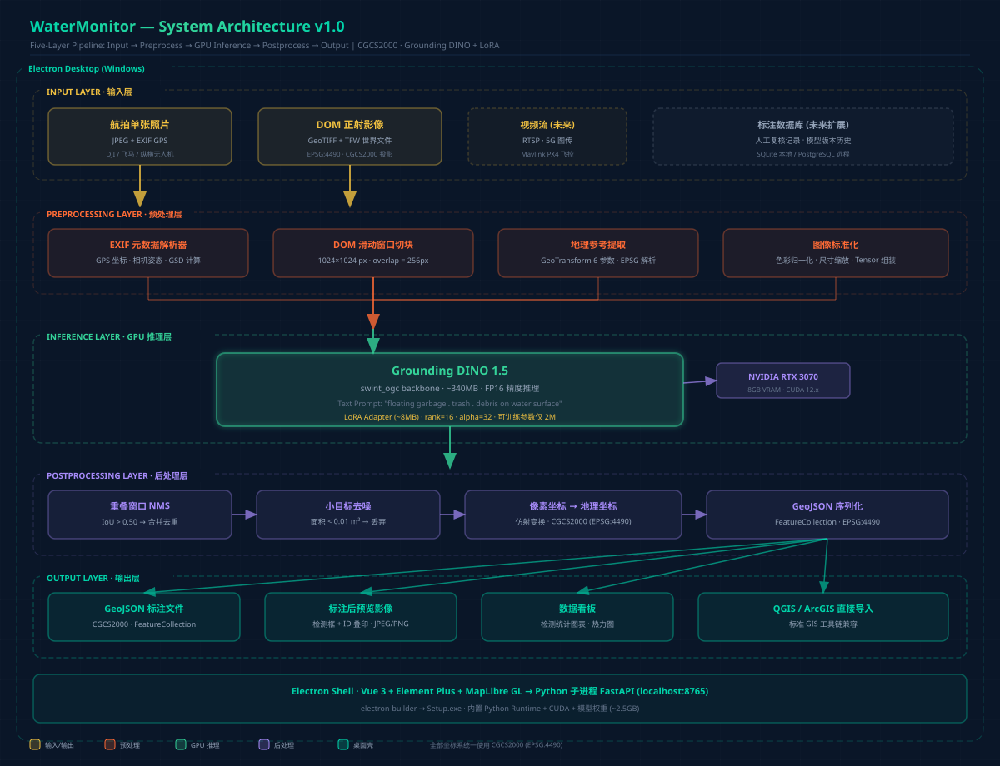
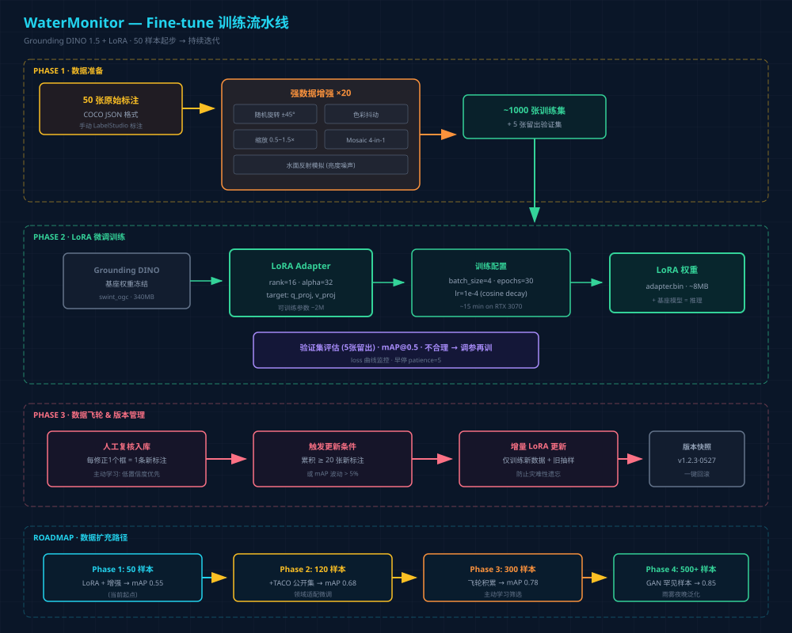
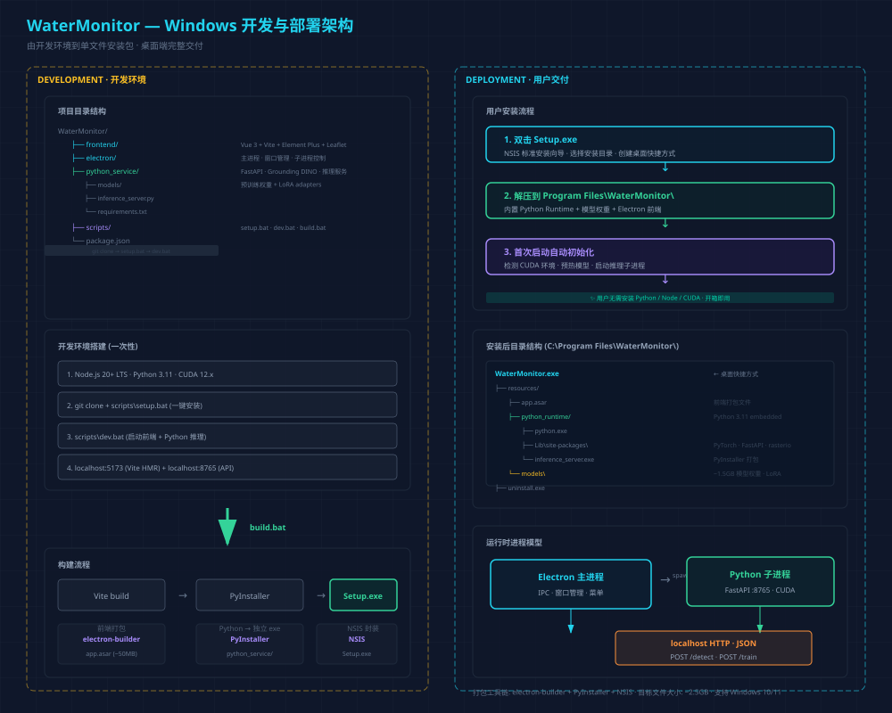

WaterMonitor
基于 Grounding DINO 1.5 + LoRA 微调 + Electron 桌面端
从航拍影像到 CGCS2000 GeoJSON 标注的完整解决方案
2026-05-28 · PrinceChow
目录
- 1. 项目背景与需求
- 2. 总体架构
- 3. 模型选型与推理
- 4. Fine-tune 训练策略
- 5. 地理定位计算 (CGCS2000)
- 6. 检测流水线
- 7. 前端设计 — "深海指挥舱"
- 8. Windows 开发与部署
- 9. 数据飞轮与持续改进
- 10. 技术栈总览
- 11. 里程碑计划
1. 项目背景与需求
项目来源：《无人机支撑城市水环境智慧监测关键技术研究》—— 长江勘测规划设计有限责任公司自主创新项目，由水环院牵头，空间公司配合
本方案聚焦 — 三大核心目标
识别
从无人机高清栅格影像中自动检出水面漂浮垃圾，架构预留细粒度分类扩展
标注
边界框 + 中心锚点定位，在航拍影像上叠印检测框、ID、置信度
定位
像素坐标 → CGCS2000 地理坐标，输出标准 GeoJSON，可直接导入 QGIS/ArcGIS
需求约束： 后处理模式 ~50 张起步样本 CGCS2000 坐标系 RTX 3070 8GB Windows 桌面端交付
2. 总体架构

五层流水线架构：输入 → 预处理 → GPU推理 → 后处理 → GeoJSON输出，由 Electron 桌面壳封装
2. 架构分层说明
GeoTIFF+TFW
EXIF GPS提取
FP16 · ~200ms/img
像素→地理坐标
标注预览图
进程模型
Electron 主进程 (main.js)
├── Vue 3 渲染进程 (localhost:5173)
└── spawn → Python 子进程 (localhost:8765)
└── FastAPI + Grounding DINO + CUDA
Electron 退出时自动杀掉 Python 子进程，无需用户手动管理
3. 模型选型与推理
首选：Grounding DINO 1.5
| 指标 | Grounding DINO 1.5 | YOLO-World-v2 (备选) |
|---|---|---|
| 开源协议 | Apache 2.0 | GPL-3.0 |
| 权重大小 | ~340MB (swint_ogc) | ~200MB (M) |
| 显存占用 FP16 | ~2.5GB | ~1.8GB |
| 1024² 推理 | ~200ms | ~120ms |
| Zero-shot 泛化 | 优秀 (航空视角) | 良好 |
| HF 原生支持 | ✅ | 需适配 |
| LoRA 微调 | PEFT 原生 | 部分支持 |
选型理由：航空视角 zero-shot 泛化优于 YOLO-World，HuggingFace 生态成熟，LoRA 工具链完善。RTX 3070 8GB 运行 FP16 推理绰绰有余。
3. 推理调用 & API 接口
from transformers import AutoProcessor, AutoModelForZeroShotObjectDetection model = AutoModelForZeroShotObjectDetection.from_pretrained( "IDEA-Research/Grounding-DINO-1.5-API", torch_dtype=torch.float16 ).to("cuda") def detect(image_path): inputs = processor(images=image, text="floating garbage . trash . debris on water surface", return_tensors="pt").to("cuda") with torch.no_grad(): outputs = model(**inputs) return processor.post_process_grounded_object_detection(...)
POST /detect
接收图像路径 → 推理 → 返回 JSON 检测列表；支持 confidence_threshold, output_format 参数
POST /train
接收 COCO 标注文件路径 → LoRA 增量训练 → 更新模型版本 → 返回 mAP 报告
4. Fine-tune 训练策略

50 → ~1000张训练集
仅2M可训练参数
RTX 3070
版本快照·一键回滚
4. 数据增强 & 扩充路线
| 增强方式 | 参数 | 目的 |
|---|---|---|
| 随机旋转 | ±45° | 多角度泛化 |
| 色彩抖动 | 亮度/对比度 ±30% | 水体色调差异 |
| 缩放 | 0.5~1.5× | 大小目标兼顾 |
| Mosaic 拼接 | 4-in-1 | 小目标检测能力 |
| 水面反射模拟 | 高斯亮度噪声 | 反光/波浪干扰鲁棒 |
数据扩充路线图
| 阶段 | 样本量 | 来源 | 预期 mAP@0.5 |
|---|---|---|---|
| Phase 1 | 50 | 当前标注 + 增强 | ~0.55 |
| Phase 2 | 120 | +TACO 公开数据集 | ~0.68 |
| Phase 3 | 300 | +人工复核积累 | ~0.78 |
| Phase 4 | 500+ | +GAN 合成罕见样本 | ~0.85 |
5. 地理定位计算 (CGCS2000)
单张航拍照片
GSD = (sensor × alt) / (focal × px)
dx_m = (cx - w/2) × GSD
lat = lat_drone + dy_m / 111320
lon = lon_drone + dx_m / (111320 × cos(lat))
100m航高 + 8.8mm焦距 → GSD≈1.5cm/px
定位误差通常 < 3m
DOM 正射影像
rasterio.open(geotiff).xy(py, px)
6参数仿射变换，内置坐标转换
定位精度通常 < 1m
DOM 已经正射校正
EPSG:4490 直接输出
CGCS2000 适配：WGS84 与 CGCS2000 椭球差异 < 0.1mm，经纬度偏差 < 1cm（远小于检测定位误差 1~3m）。GPS 读出的坐标直接标注为 CGCS2000 即可。GeoJSON 头部声明 EPSG:4490。
6. 检测流水线

6. 后处理参数 & 性能估算
| 参数 | 默认值 | 说明 |
|---|---|---|
| confidence_threshold | 0.35 | 低于此值直接丢弃 |
| auto_confirm_threshold | 0.60 | 高于此值自动确认 |
| review_range | 0.35~0.60 | 此区间需人工复核 |
| nms_iou_threshold | 0.50 | 重叠框去重 |
| min_area_m2 | 0.01 | 小于此面积视为噪点 |
| overlap_px | 256 | DOM 切块重叠 (25%) |
推理性能 (RTX 3070)
| 输入规模 | 切块数 | 推理时间 | 后处理 | 总时间 |
|---|---|---|---|---|
| 单张 5472×3648 | 1 | ~200ms | ~10ms | ~0.2s |
| DOM 5000×4000 | ~35 | ~7s | ~1s | ~8s |
| DOM 15000×12000 | ~270 | ~55s | ~5s | ~60s |
7. 前端设计 — "深海指挥舱"

7. 前端技术栈 & 插件机制
| 层 | 选型 | 理由 |
|---|---|---|
| 框架 | Vue 3 + TypeScript | 仓库起步技术，类型安全 |
| UI 库 | Element Plus | 成熟中后台组件库 |
| 地图引擎 | MapLibre GL JS | Apache 2.0，支持天地图 CGCS2000 |
| 图像查看 | OpenSeadragon | 10GB+ GeoTIFF 流畅缩放 |
| 图表 | ECharts 5 | 数据看板统计图 |
插件扩展：新功能只需在 features/ 目录新增模块并注册。如未来增加蓝藻检测：pipeline.register(new AlgaeDetector('/models/lora_algae')) — 不修改任何已有代码
7. 前端性能指标
冷启动时间
骨架屏 + 懒加载
大图不卡
金字塔瓦片服务
列表无延迟
虚拟滚动渲染
三向联动交互
结果列表 ←→ 影像视图 (框高亮) ←→ 地图 (flyTo 点位) 用户点击任一视图 → 其他两个同步响应
8. Windows 开发与部署

8. 开发流程 & 打包交付
开发环境搭建 (一次性)
C:\> git clone ... C:\> scripts\setup.bat ← 一键安装所有依赖 C:\> scripts\dev.bat ← 启动前端 + Python推理
打包构建 → Setup.exe
Vite build (前端) + PyInstaller (Python → 独立exe) + electron-builder + NSIS 安装程序 = Setup.exe (~2.5GB)
用户安装后效果
C:\Program Files\WaterMonitor\ ├── WaterMonitor.exe ← 桌面快捷方式 ├── resources\ │ ├── app.asar 前端打包 (~50MB) │ ├── python_runtime\ Python 3.11 (~800MB) │ └── models\ 模型权重+LoRA (~1.5GB) └── uninstall.exe
9. 数据飞轮与持续改进
飞轮闭环
主动学习
低置信度 (0.35~0.60) 自动排入复核队列顶部，引导用户优先修正模型不确定的样本
版本管理
每次 LoRA 更新自动版本快照 (v1.2.3·YYYYMMDD)，models/lora_water_garbage/current → 符号链接指向激活版本
10. 技术栈总览
全部开源 · 可本地部署 · 无需联网 · Windows 原生支持
| 领域 | 技术 | 协议 |
|---|---|---|
| 前端框架 | Vue 3 + TypeScript + Vite | MIT |
| 桌面壳 | Electron 30+ | MIT |
| 推理框架 | PyTorch 2.x + HF Transformers | BSD/Apache 2.0 |
| 目标检测 | Grounding DINO 1.5 | Apache 2.0 |
| 微调框架 | PEFT (LoRA) | Apache 2.0 |
| API 服务 | FastAPI + uvicorn | MIT |
| 地理处理 | rasterio + pyproj | BSD |
| 地图引擎 | MapLibre GL JS | Apache 2.0 |
| 打包 | electron-builder + PyInstaller + NSIS | MIT |
11. 里程碑计划
总工期预估：~7 周 → v1.0 完整产品
| # | 里程碑 | 内容 | 工期 | 交付物 |
|---|---|---|---|---|
| M1 | 基础设施 | 项目脚手架、Electron+Python IPC、基础UI | 1周 | 可运行空白应用 |
| M2 | 推理核心 | Grounding DINO 加载、单图推理、API | 1周 | POST /detect 可用 |
| M3 | 坐标系统 | EXIF解析、DOM仿射变换、GeoJSON | 0.5周 | 坐标换算模块 |
| M4 | 前端集成 | 影像导入、结果展示、地图、三向联动 | 1.5周 | 完整交互闭环 |
| M5 | 复核导出 | 人工复核编辑器、GeoJSON/CSV导出 | 0.5周 | 完整交付能力 |
| M6 | 训练管线 | 数据增强、LoRA微调脚本、版本管理 | 1周 | 可复现训练流程 |
| M7 | 打包测试 | electron-builder打包、Win10/11兼容 | 0.5周 | Setup.exe |
| M8 | 飞轮文档 | 主动学习、增量训练UI、用户手册 | 1周 | 完整产品 v1.0 |
设计文档审阅完成
以上为 WaterMonitor v1.0 完整技术设计
涵盖 11 个章节 + 5 张架构图 + 里程碑计划
详细 Markdown 文档：design/design-doc-v1.md
下一步：审阅确认后进入 实现计划 (writing-plans) 阶段
2026-05-28 · PrinceChow · WaterMonitor